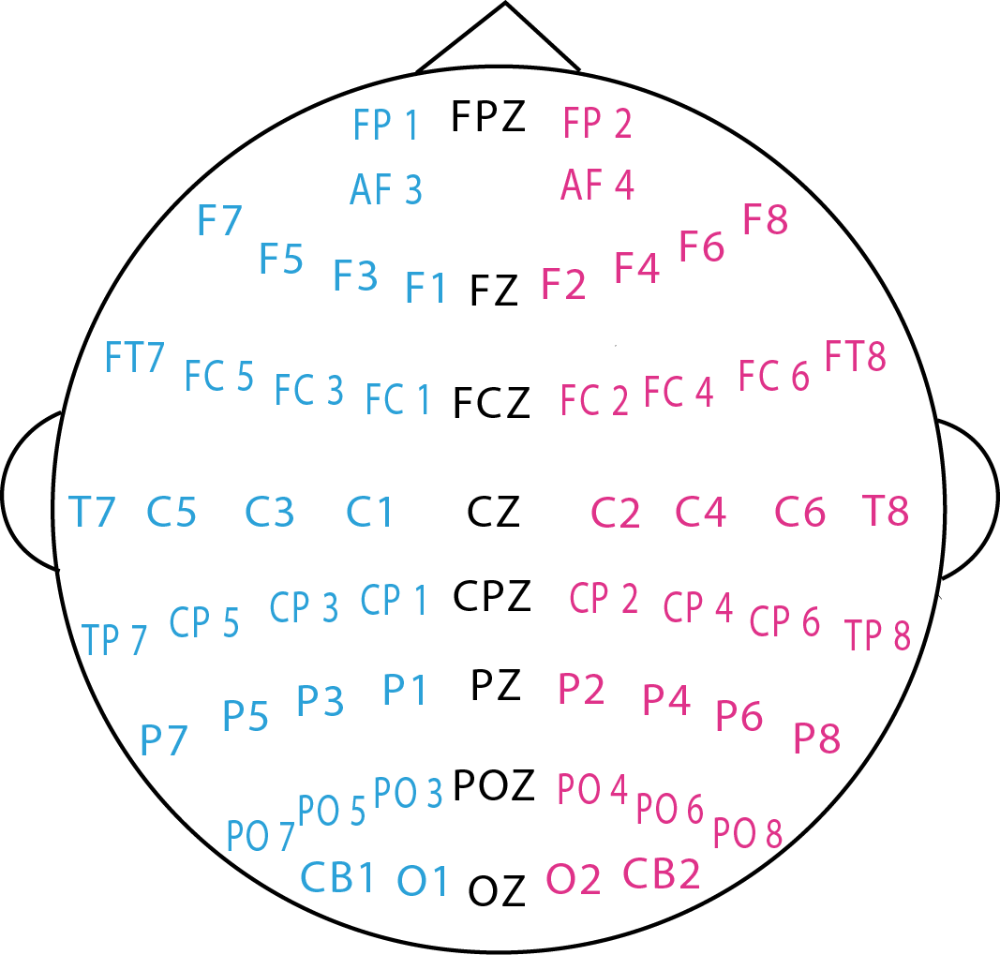

SEED Dataset
A dataset collection for various purposes using EEG signals


Stimuli and Experiment
Subjects
Fifteen Chinese subjects (7 males and 8 females; MEAN: 23.27, STD: 2.37) participated in the experiments. In order to protect personal privacy, we have hidden their names and indicate each subject with a number from 1 to 15.Dataset Summary
The SEED consists of two parts:-
In the "Preprocessed_EEG" folder, there are files containing downsampled, preprocessed and segmented versions of the EEG data in Matlab (.mat file).
The data was downsampled to 200Hz.
A bandpass frequency filter from 0-75Hz was applied.
We extracted the EEG segments corresponding to the duration of each movie.
There are totally 45 .mat (Matlab) files, one for per experiment.
Each subject performed the experiment three times with an interval of about one week.
Each subject file contains 16 arrays.
15 arrays contain segmented preprocessed EEG data of 15 trials in one experiment (eeg_1~eeg_15, channel×data).
A array name labels contains the label of the corresponding emotional labels
(-1 for negative, 0 for neutral and +1 for positive).
The detailed order of the channels is included in the dataset.
The EEG cap according to the international 10-20 system for 62 channels is shown below:
 - In the "Extracted_Features" folder, there are files containing extracted differential entropy (DE) features of the EEG signals, which was first proposed in [1]. These data is well-suited to those who want to quickly test a classification method without propcessing the raw EEG data. The file format is the same as the Data_prepocessed. We also computed differential asymmetry (DASM) and rational asymmetry (RASM) features as the differences and ratios between the DE features of 27 pairs of hemispheric asymmetry electrodes. All the features were further smooth with conventional moving average and linear dynamic systems (LDS) approaches. For more details about the feature extraction and feature smooth, please refer to [1] and [2].
Download
References
If you feel the dataset helpful for your study, please add the following references to your publications.
1. Ruo-Nan Duan, Jia-Yi Zhu and Bao-Liang Lu, Differential Entropy Feature for EEG-based Emotion Classification, Proc. of the 6th International IEEE EMBS Conference on Neural Engineering (NER). 2013: 81-84. [link] [BibTex]
2. Wei-Long Zheng, and Bao-Liang Lu, Investigating Critical Frequency Bands and Channels for EEG-based Emotion Recognition with Deep Neural Networks, accepted by IEEE Transactions on Autonomous Mental Development (IEEE TAMD) 7(3): 162-175, 2015. [link] [BibTex]